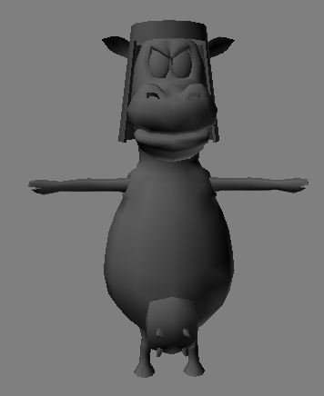
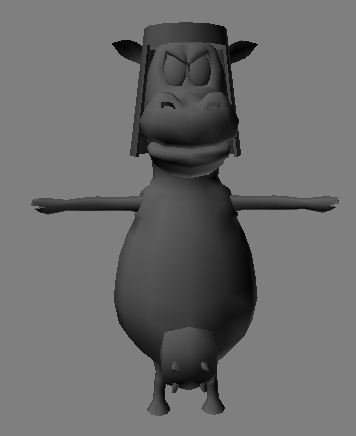

Leith

A medieval tower defence game, called Cow Nation - the cattle are revolting! And they have siege weapons!


A medieval tower defence game, called Cow Nation - the cattle are revolting! And they have siege weapons!

What engine was used? What’s the thing about this project that makes you feel a bit ashamed that you didn’t knew back then but know now?
I wrote my own engines back then, I did not feel the need for community support, I just wanted to rush into the commercial space and own some of it, but the game was tested on gamebryo and worked for multiplayer on a lan
Also, I was not “qualified” back then, I was just a talented amateur coder, who coded robotics 3d stuff for a day gig, for the big four auto companies, and its also worth noting, I stopped playing games, a very long time ago, and started to just be an observer of my market and my competition - I spend very little time playing games, despite making them a career choice
What one thing can I say that makes me ashamed, when there are so many on reflection?
The main one is, I thought I had a fun idea, and the fun police told me it’s not ok to do that. I am ashamed that my concept was taken to be politically incorrect, by a group of my peers. I am shameless, I do not accept responsibility for my political incorrectness. I am an artist, and this is my art. It may not be a picture, but it is my art, and I would do it for free, if I could not secure payment.

Looks pretty impressive  The first entry of my blog (2008) actually started with my first gamedev days preparing for my first ludum dare-competition.
The first entry of my blog (2008) actually started with my first gamedev days preparing for my first ludum dare-competition.

My silly cow game was not entered into the 2011 IGF, international game festival, no, we went with a 3d jousting game i wrote the physics for, i was heartbroken - we lost, mainly because most of the judges were not willing to wait for over 2TB of arena details to load
“falling dude under zero y plane” - print it, and take it to the museum of modern art, grant them rights to display but not reproduce it - its YOUR ART! You OWN this image, so stand up and own your intellectual property! I could give lessons on it, but its not my day job.

2009 was the year I first used the name LucKey Productions for a school project. A name which would reemerge only years later.

Ten years ago, that was 2009 wow!!
I was interning during my school days and that was when I actually looked towards game dev as something that I might enjoy. It all happened when I discovered Dark GDK while trying to download Visual C++ 2008  , was just fiddling around it. Unfortunately, I can’t find where these project are
, was just fiddling around it. Unfortunately, I can’t find where these project are
Over time, software developers tend to lose track of their own work, it’s ok, it represents some homework you did once, you don’t need to keep it all for reference
It seems the oldest digital creation I still have is from 2000 which is a render of a giant bug in its larval stage. Showing once again how poetically fitting the past can be. 
Too bad I lost the gnome, hamster and garbage robot. I really was more proud of those.
my oldest public domain work used to be on here
http://u.wants.it
this was sort of my first public web thing, a looong time ago, its host is a really nice guy in south east asia who owes me nothing, but held this up over 20 years
some of its broken now, but its still up
I would rather trust my old stuff to an eastern european or asian i know, than some random website like github, because i stand a better chance to recover it